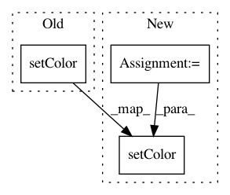

c44f594fcffe135b26327f37ad87accad52d1422,cistar-dev/cistar/core/base_env.py,SumoEnvironment,reset,#SumoEnvironment#,283
Before Change
if self.vehicles[veh_id]["type"] == "rl":
self.traci_connection.vehicle.setColor(veh_id, color_rl)
else:
self.traci_connection.vehicle.setColor(veh_id, color)
self.traci_connection.simulationStep()
// TODO: Replace these traci calls with initial_state accesses
After Change
// create the list of colors
colors = {}
key_index = 0
color_choice = np.random.choice(len(COLORS))
for key in self.scenario.type_params.keys():
colors[key] = COLORS[(color_choice+key_index)%len(COLORS)]
key_index += 1
for veh_id in self.ids:
type_id, route_id, lane_index, lane_pos, speed, pos = self.initial_state[veh_id]
// clears controller acceleration queue
if not self.vehicles[veh_id]["type"] == "rl":
self.vehicles[veh_id]["controller"].reset_delay(self)
self.traci_connection.vehicle.remove(veh_id)
self.traci_connection.vehicle.addFull(veh_id, route_id, typeID=str(type_id), departLane=str(lane_index),
departPos=str(lane_pos), departSpeed=str(speed))
self.traci_connection.vehicle.setColor(veh_id, colors[self.vehicles[veh_id]["type"]])
self.traci_connection.simulationStep()
In pattern: SUPERPATTERN
Frequency: 3
Non-data size: 3
Instances
Project Name: flow-project/flow
Commit Name: c44f594fcffe135b26327f37ad87accad52d1422
Time: 2017-05-31
Author: eugenevinitsky@Eugenes-MacBook-Pro.local
File Name: cistar-dev/cistar/core/base_env.py
Class Name: SumoEnvironment
Method Name: reset
Project Name: ilastik/ilastik
Commit Name: b18f11390a9b1353eaa124582bfae53356adb917
Time: 2018-08-30
Author: k-dominik@users.noreply.github.com
File Name: ilastik/workflows/carving/carvingGui.py
Class Name: CarvingGui
Method Name: _update_colors
Project Name: flow-project/flow
Commit Name: 3b1957f4c655f881b54067cc1da6dc377f1b38b4
Time: 2017-05-15
Author: eugenevinitsky@calvisitor-10-105-137-21.calvisitor.1918.berkeley.edu
File Name: cistar-dev/cistar/core/base_env.py
Class Name: SumoEnvironment
Method Name: reset